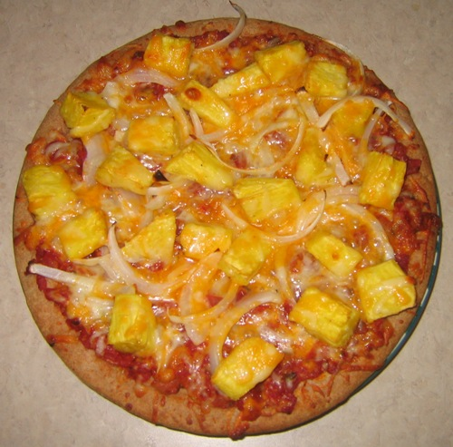

❮
Новость 1
Новость 2


Новость 4
❯
Настоящая пицца – это вкусное сочетание теста, сочной начинки и сыра. При всем этом начинки не должно быть мало, а тесто не должно быть пересушенным. Сыр же должен завершать этот кулинарный шедевр. Наша горячая пицца именно такая. Мы знаем, за что все любят это блюдо, и стараемся не уходить от традиций.